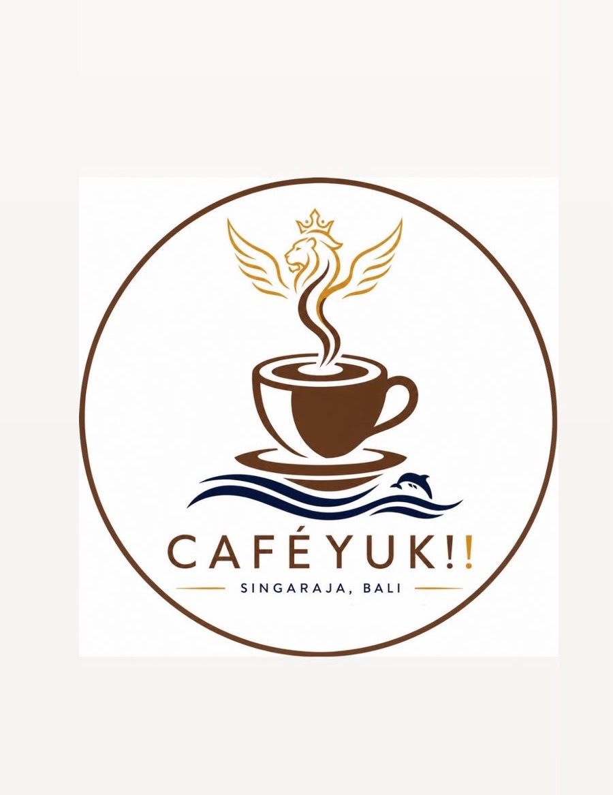

Website Café — CaféYuk!!
Website profil untuk kedai kopi CaféYuk!! di Singaraja, Bali — menampilkan menu, suasana, dan info kedai.
Lihat situs →Kumpulan proyek yang pernah saya kerjakan, dari website statis sampai aplikasi kecil dengan interaktivitas JavaScript.

Website profil untuk kedai kopi CaféYuk!! di Singaraja, Bali — menampilkan menu, suasana, dan info kedai.
Lihat situs →Menghitung volume dan luas permukaan limas segiempat beraturan berdasarkan sisi alas dan tinggi.
Coba aplikasi →